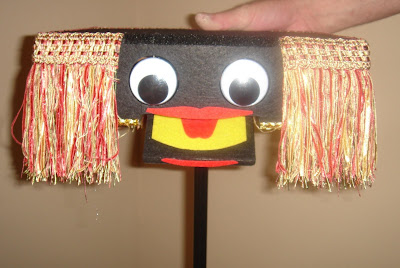
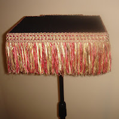
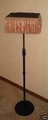
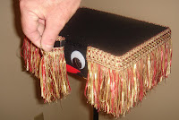
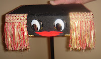

"Talking" Vent Stand
8/10/2009
{kind=link}

{kind=link}

{kind=link}

Here's the "Ultimate Vent Stand"! Yes, this is a true ventriloquist stand. Extremely strong top that can hold any ventriloquist doll or puppet of any size. You can raise the stand up and down for your position comfort. But, there is MORE! This table top comes ALIVE! Amaze your audience and friends with the beautiful table top which turns into a true Ventriloquist Prop with side to side self-centering eyes and big easy to see moving mouth!
So simple to operate with one hand! Controls
Place your bid here
{kind=link}

are concealed in the rear of the table where no one can see them. This one comes complete, with mic stand, base and talking table top. WOW - what great FUN! Be the first one to own the Ultimate Vent Stand! Made by Kevin Detweiler, owner of Animated Puppets. Great routine included, written by Sonja Detweiler who has been writing vent routines and books for the past 30 years!{kind=link}

Now for sale on eBay!Place your bid here